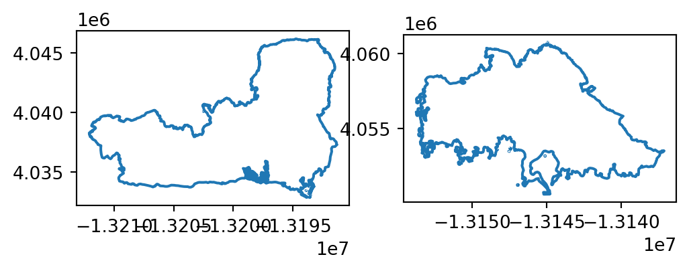
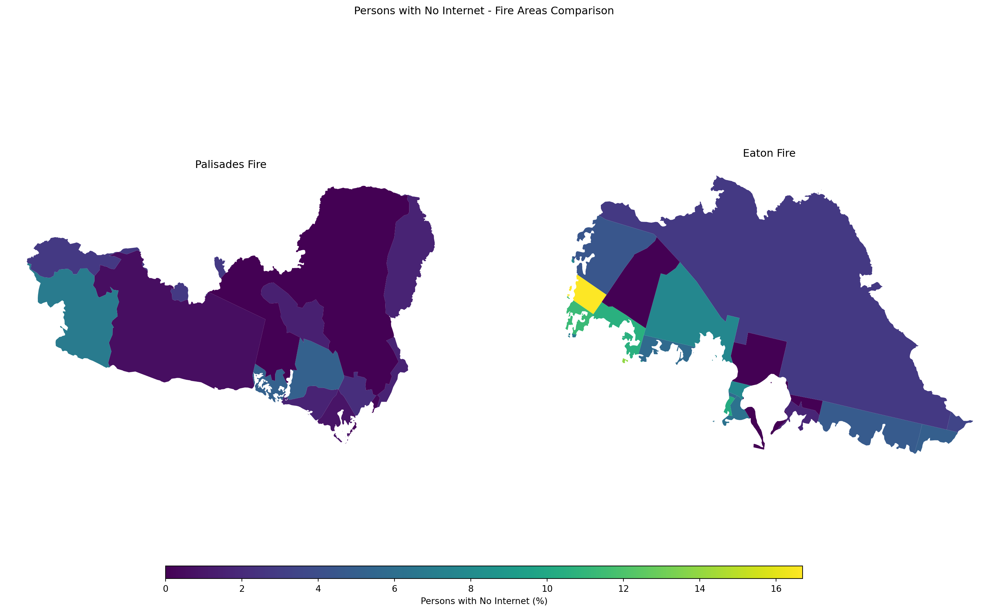

# Import necessary libraries
import os
import geopandas as gpd
import xarray as xr
import matplotlib.pyplot as pltLos Angeles Fires: False Color Imagery & Socioeconomic Analysis
This blog post summarizes anlyses involving the Eaton and Palisades Fires that took place in Los Angeles County during January 2025. It will speficially highlight the vegetation damage through false color imagery (part 1) and explore internet availability of census blocks affected by the fires (part 2).
Complete code for the analyses can be found in the following Github repositories: part 1; part 2
Overview
The Eaton and Palisades fires occurred nearly simultaneously, inflicting both ecological and infrastructural damage on Los Angeles. Together, they destroyed more than 16,000 structures and displaced thousands of households. Understanding the specifics of the impact – such as which populations were most affected as well as the extent of vegetation damage – is vital for recovery efforts, as well as informing future fire safety and policy.
We overlay the fire perimeters onto to remote sensing and Environmental Justice Index (EJI) data to explore the patterns within in. First, by using remote sensing data and assigning infrared bands to visible colors, we are able to highlight vegetation health, burn severity, and the extent of fire scars remnant after the fire. Second, clipping EJI census block data to the fire perimeters gives us a summary of the internet availability in each area. Internet availability is an important aspect of fire safety response as communities that lack availability to natural disaster information have less time to respond.
Analysis Highlights:
- Using
xarrayand NetCDF data formats. Our primary dataset comes from landsat, and must be read in using thexarraypackage. - Plotting raster data as false color. The combination
.plot.imshowensures that our raster image plots, arguments likerobustensure accurate plotting, and selecting reflectance bands other than true color are important steps to the process. - Clipping raster data to a polygon.
geopandasfunctionality is used to accurately clip EJI data to our area of interest.
About the data:
Landsat/remote sensing
The dataset used in this analysis is a simplified collection of bands (red, green, blue, near-infrared and shortwave infrared) from the Landsat Collection 2 Level-2 atmospherically corrected surface reflectance data, collected by the Landsat 8 satellite. Landsat data is provided by a series of Earth-observing satellites jointly managed by NASA and the U.S. Geological Survey (USGS), and stores a significant amount of reflectance information about the Earth’s surface.
The data was retrieved from the Microsoft Planetary Computer data catalogue catalogue and clipped to an area surrounding the fire perimeters by the EDS220 course team. Accessed November 15, 2025.
Palisades and Eaton fire perimeter
Palisades and Eaton fire perimeter data were sourced from LA County’s GIS hub. It contains dissolved fire boundaries for Eaton and Palisades fires. It is a public data set, published January 21, 2025 and last updated on February 26, 2025. Accessed November 15, 2025.
EJI
describe
Analysis
False Color Image
Setup
Fire Perimeter Data Exploration
Before we utilize our fire perimeter datasets, we want to ensure that we have a general sense of what they contain and how they look.
# Read in data, using os to build file path and geopandas to read in .shp files (one for each fire)
# Eaton perimeter
fp = os.path.join('data','Eaton_Perimeter_20250121','Eaton_Perimeter_20250121.shp')
eaton_perimeter = gpd.read_file(fp)
# Palisades perimeter
fp = os.path.join('data','Palisades_Perimeter_20250121','Palisades_Perimeter_20250121.shp')
palisades_perimeter = gpd.read_file(fp)Data loaded in successfully!
# Plot perimeter data to visualize its contents
# Initialize figure with two axes (so can plot each perimeter on a separate plot)
fig, ax = plt.subplots(nrows = 1, ncols = 2, figsize = (6,4))
# Plot Eaton fire perimeter on the left //.boundary allows access to just the border of the polygon
eaton_perimeter.boundary.plot(ax = ax[0])
# And the Palisades fire perimeter on the right
palisades_perimeter.boundary.plot(ax = ax[1])
Now we have a preliminary understanding of what our datasets contain: geometries of each fire perimeter.
To find the CRS of the two datasets (which will inform how we treat them with plotting other data), we can explore the following.
# What is the CRS?
print(f"The CRS of the Eaton fire perimeter data is {eaton_perimeter.crs}.")
print(f"The CRS of the Palisades fire perimeter data is {palisades_perimeter.crs}.")The CRS of the Eaton fire perimeter data is EPSG:3857.
The CRS of the Palisades fire perimeter data is EPSG:3857.Great! They match, and we will keep this information in mind when we plot with our raster data.
Landsat (NetCDF) Data Import and Exploration
Similarly to our fire perimeter data, we want to read in our remote sensing data and take a look at its features, such as dimensions, variables, and attributes. We are using xarray in this case.
# Read in data, using os to build file path
fp = os.path.join('data', 'landsat8-2025-02-23-palisades-eaton.nc')
# a. Import landsat data using `xr.open_dataset()` from the xarray library
landsat = xr.open_dataset(fp, engine="netcdf4")Include exploration stepts
This data currently has no geographic information, however it is stored within the spatial_ref variable. We can restore it by doing the following.
# Access CRS through `spatial_ref` variable
# .crs_wkt specifies that our CRS was stored in the well-known text format
landsat_crs = landsat.spatial_ref.crs_wkt
# Recover and reassign geospatial info through .write_crs
landsat_geo = landsat.rio.write_crs(landsat_crs)
# Print new CRS info
print(f"The CRS of the landsat raster data is {landsat_geo.rio.crs}.")The CRS of the landsat raster data is EPSG:32611.False Color Image
False color images use colors not found in visible light, such as infrared, which are assigned to different bands of the visible light spectrum (RGB). This helps us visualize phenomenom that can be observed with reflectance patterns, but not by the human eye.
Here, we create a false color image by plotting the short-wave infrared (swir22), near-infrared, and red variables (in that order). We do this because those three wavelengths are useful in determining vegetation health. Then, we can overlay our fire perimeters to explore differences between affected and untouched areas.
First, we want to make sure our geographic information matches.
# Changing fire perimeter data to the landsat CRS ; sourced from original exploration, where landsat_crs = 'epsg:32611'
eaton_perimeter = eaton_perimeter.to_crs(landsat_crs)
palisades_perimeter = palisades_perimeter.to_crs(landsat_crs)Then, we can plot them all together!
Note: To plot a raster image, we select the bands we want to plot in RGB order from the dataset using [[]]. The method .plot.imshow(robust = True) is used to plot. imshow() is helpful for rasters as it tells the “image to show”, and the argument robust = True indicates to only plot values from the 2nd to 98th percentile. This helpful avoid outliers that are results of inaccurate or incorrect data (for example: 0 or very high values that correspond to cloud cover), and can skew the appearance of the image, sometimes inhibitting it from plotting at all.
# Initialize figure with one axes
fig, ax = plt.subplots(figsize = (9,5))
# Plot false color raster image by selecting which bands we want to assign
landsat[['swir22', 'nir08', 'red']].to_array().plot.imshow(robust = True,
ax = ax)
# Plot the Eaton fire perimeter
eaton_perimeter.boundary.plot(ax = ax,
color = "red",
linewidth = 1.5,
label = "Fire Perimeter") # Set label to create legend for fire perimeter
# Plot the Palisades fire perimeter
palisades_perimeter.boundary.plot(ax = ax,
color = "red",
linewidth = 1.5)
# Add labels to distinguish between Eaton and Palisades boundaries
# .set_bbox() creates background for text (for better visibility)
ax.text(x = 402400, y = 3779000, s = "Eaton", color = "black", fontsize = 8).set_bbox(dict(facecolor='white', alpha = 0.8, edgecolor = 'none'))
ax.text(x = 345000, y = 3775000, s = "Palisades", color = "black", fontsize = 8).set_bbox(dict(facecolor='white', alpha = 0.8, edgecolor = 'none'))
# Turn of x and y axis (are in meters, so don't tell give us a lot of information)
ax.axis('off')
# Plot title and description
plt.title("Los Angeles County, Post January 2025 Fires (False Color Image)")
plt.figtext(x = 0.5, y = 0, s= "Description: False color imagery, overlayed with known fire perimeters, "
"is used to highlight the effects of wildfires on LA county." \
" By plotting short-wave infrared (swir22), near-infrared, and red reflectance bands," \
"we are able to observe the stark contrast in features such as vegetation health and burn severity throughout the area.",
ha="center", fontsize=10, wrap=True)
# Add legend (for fire perimeters)
plt.legend()
plt.show()
Now that we have a false color image with the fires highlighted, we can see the difference in vegetation health between areas within and outside the fire perimeters.
Internet Availability
Load in EJI data using geopandas.
eji = gpd.read_file("data/EJI_2024_California/EJI_2024_California.gdb")Polygon Clipping
The EJI dataset is a raster spanning all of California. To get it to only our area of interest (the fires), we can use the geopandas method .clip().
# Transform
palisades_perimeter = palisades_perimeter.to_crs(eji.crs)
# Transform
eaton_perimeter = eaton_perimeter.to_crs(eji.crs)# First arg: what we want to clip; Second arg: what polygon we want to clip to
clipped_palisades = gpd.clip(eji, palisades_perimeter)
clipped_eaton = gpd.clip(eji, eaton_perimeter)To ensure that our clipping was successful, we can plot our new clipped data with our fire perimeters.
# Initialize plot with two axes, plot eaton and palisades on each
ig, ax = plt.subplots(figsize=(9,5), nrows = 1, ncols = 2)
## Palisades
# Plot clipped data
clipped_palisades.plot(ax = ax[0])
# Fire periemeter
palisades_perimeter.boundary.plot(ax = ax[0],
color = "red")
## Eaton
# Clipped data
clipped_eaton.plot(ax = ax[1])
# Fire perimeter
eaton_perimeter.boundary.plot(ax = ax[1],
color = "red")
Visualizing EJI Data
From our EJI data, we will select our variable of interest – internet availability. The variable name was found in the metadata.
# Create dataset just containing internet availability information
eji_variable = 'E_NOINT'# Initilaize figure
fig, (ax1, ax2) = plt.subplots(1, 2, figsize=(20, 10))
# Find common min/max for legend range
vmin = min(clipped_palisades['E_NOINT'].min(), clipped_eaton['E_NOINT'].min())
vmax = max(clipped_palisades['E_NOINT'].max(), clipped_eaton['E_NOINT'].max())
# Plot census tracts within Palisades perimeter
clipped_palisades.plot(
column= eji_variable,
vmin=vmin, vmax=vmax,
legend=False,
ax=ax1,
)
ax1.set_title('Palisades Fire')
ax1.axis('off')
# Plot census tracts within Eaton perimeter
clipped_eaton.plot(
column=eji_variable,
vmin=vmin, vmax=vmax,
legend=False,
ax=ax2,
)
ax2.set_title('Eaton Fire')
ax2.axis('off')
# Add overall title
fig.suptitle('Persons with No Internet - Fire Areas Comparison')
# Add shared colorbar at the bottom
sm = plt.cm.ScalarMappable( norm=plt.Normalize(vmin=vmin, vmax=vmax))
cbar_ax = fig.add_axes([0.25, 0.08, 0.5, 0.02]) # [left, bottom, width, height]
cbar = fig.colorbar(sm, cax=cbar_ax, orientation='horizontal')
cbar.set_label('Persons with No Internet (%)')
plt.show()
To do: - describe EJI data and get reference - update xarray df exploration steps - individualize last code chunk with eji plot (make image smaller) - add conclusion/summary - figure out what to do with double title - update eji with CRS transformation info
References:
Earth Resources Observation and Science (EROS) Center. (2020). Landsat 8–9 Operational Land Imager / Thermal Infrared Sensor Level-2, Collection 2 [Dataset]. U.S. Geological Survey. https://doi.org/10.5066/P9OGBGM6
Los Angeles County Enterprise GIS. (2025). Palisades and Eaton Dissolved Fire Perimeters [Dataset]. Los Angeles County. https://egis-lacounty.hub.arcgis.com/maps/ad51845ea5fb4eb483bc2a7c38b2370c/about
https://www.lewis.ucla.edu/research/the-palisades-and-eaton-fires-neighborhood-data-and-potential-housing-market-effects/